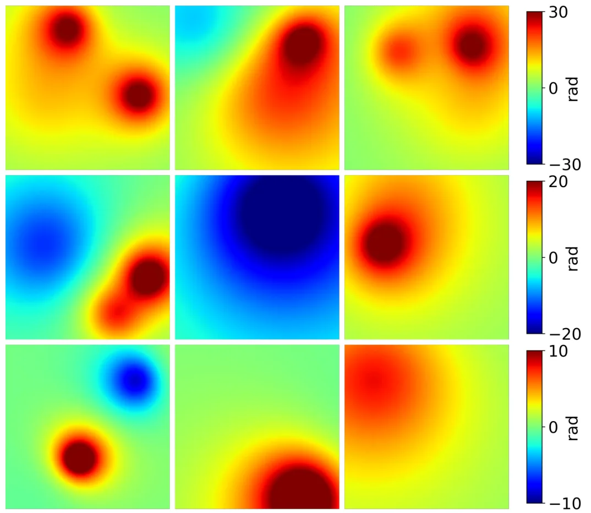
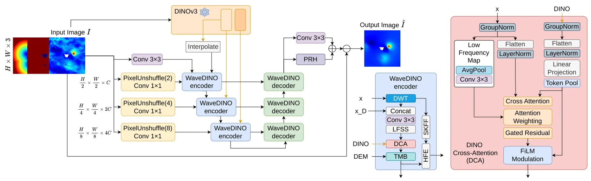
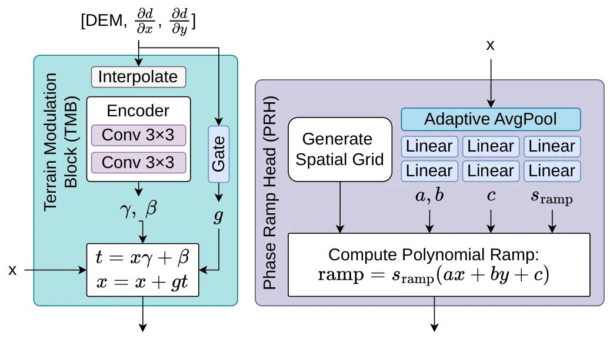
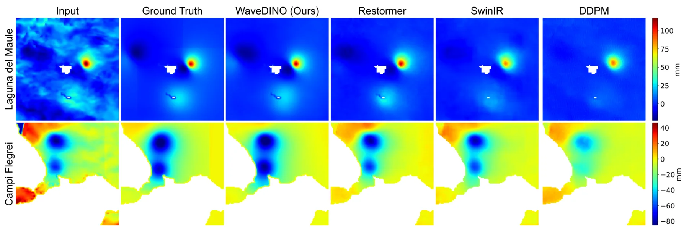
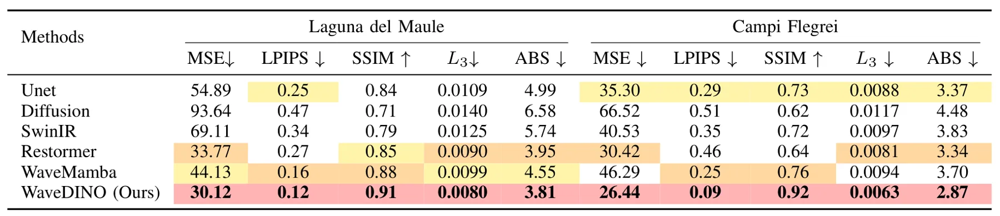
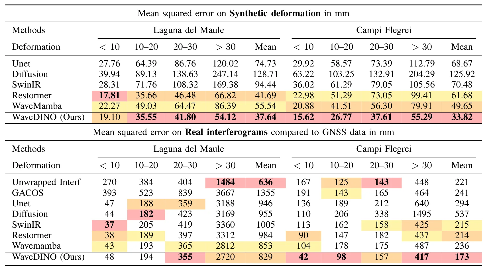

WaveDINO：由 GNSS 验证的展开 InSAR 干涉图学习式大气校正WaveDINO: Learning-Based Atmospheric Correction of Unwrapped InSAR Interferograms Validated by GNSS: Results at Laguna del Maule and Campi Flegrei Volcanoes
包含 GNSS 验证但不涉及 GNSS 定位、PPP/RTK 或多传感器紧耦合；适合作为遥感形变监测与 GNSS 外部基准资料，和 SLAM 主线关系较弱。
一句话工作总结
WaveDINO 用 DINOv3 特征和地形条件做 InSAR 大气校正，并用 GNSS 形变观测验证去噪后结果。
摘要
InSAR 能有效监测火山形变，但观测常被大气相位延迟、季节性地表变化和 decorrelation 污染。传统数值天气模型校正方法能降低部分影响，但未必稳定去除大气伪影，并可能引入残余偏差。WaveDINO 提出一种学习式 unwrapped InSAR interferogram 去噪方法，采用物理动机合成形变与真实大气噪声结合的混合训练策略。框架使用 wavelet 多尺度去噪，并以冻结 DINOv3 foundation-model features 和地形信息为条件。训练中把合成岩浆源形变叠加到短期干涉图上，使网络接触真实大气统计同时保留真值。作者在 Laguna del Maule 和 Campi Flegrei 火山的合成与长期真实干涉图上评估，并用独立 GNSS 测量验证，两个地点的平均 GNSS misfit 分别降低约 3% 和 19%。
Interferometric Synthetic Aperture Radar (InSAR) enables effective monitoring of volcanic deformation; however, the observed signals are often corrupted by atmospheric phase delays, seasonal surface changes, and decorrelation effects. Existing atmospheric correction methods, such as numerical weather model-based methods, can reduce these effects but do not consistently remove atmospheric artefacts and may introduce residual biases. To address these limitations, we propose a novel learning-based method for denoising unwrapped InSAR interferograms, using a hybrid training strategy that combines physically motivated synthetic deformation with real atmospheric noise. Specifically, we introduce WaveDINO, a wavelet-based multi-scale denoising framework conditioned on frozen DINOv3 foundation-model features and terrain information. Training uses synthetic magma-source deformation superimposed on short-term interferograms to expose the network to realistic atmospheric statistics while retaining known ground truth. Performance is evaluated on both controlled synthetic data and long-term real interferograms from Laguna del Maule (Chile) and Campi Flegrei (Italy), with independent GNSS measurements used for validation. WaveDINO consistently outperforms competing models, improving agreement with GNSS measurements, and reducing mean GNSS misfit by approximately 3% and 19% at two sites, respectively, while surpassing weather-model-based corrections.
中文解读摘录
- 链接：abs / PDF；作者：Robert Popescu, Juliet Biggs, Tianyuan Zhu, Nantheera Anantrasirichai；类别：cs.CV；采集 score=6。
- 核心思路：InSAR 火山形变监测常受大气相位延迟、季节性地表变化和 decorrelation 影响；WaveDINO 用学习式多尺度去噪做 unwrapped interferogram 大气校正，并用独立 GNSS 观测验证。
- 方法要点：结合物理动机合成形变和真实大气噪声训练；使用 wavelet multi-scale denoising，条件来自冻结 DINOv3 foundation-model features 和地形信息；在 Laguna del Maule 与 Campi Flegrei 评估。
- 关注点：不是 GNSS 定位或 GNSS/INS 融合，而是遥感形变产品与 GNSS 形变观测的一致性验证；可归入 GNSS 用作地表形变基准/外部验证的资料。
图表/页面预览

{kind=link}

{kind=link}

{kind=link}

{kind=link}

{kind=link}

{kind=link}
